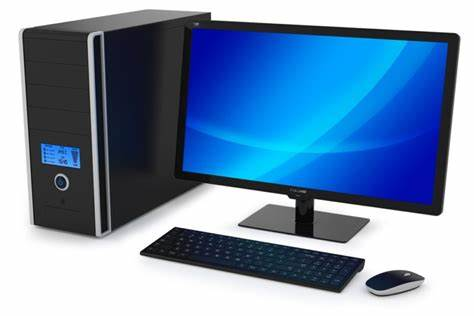
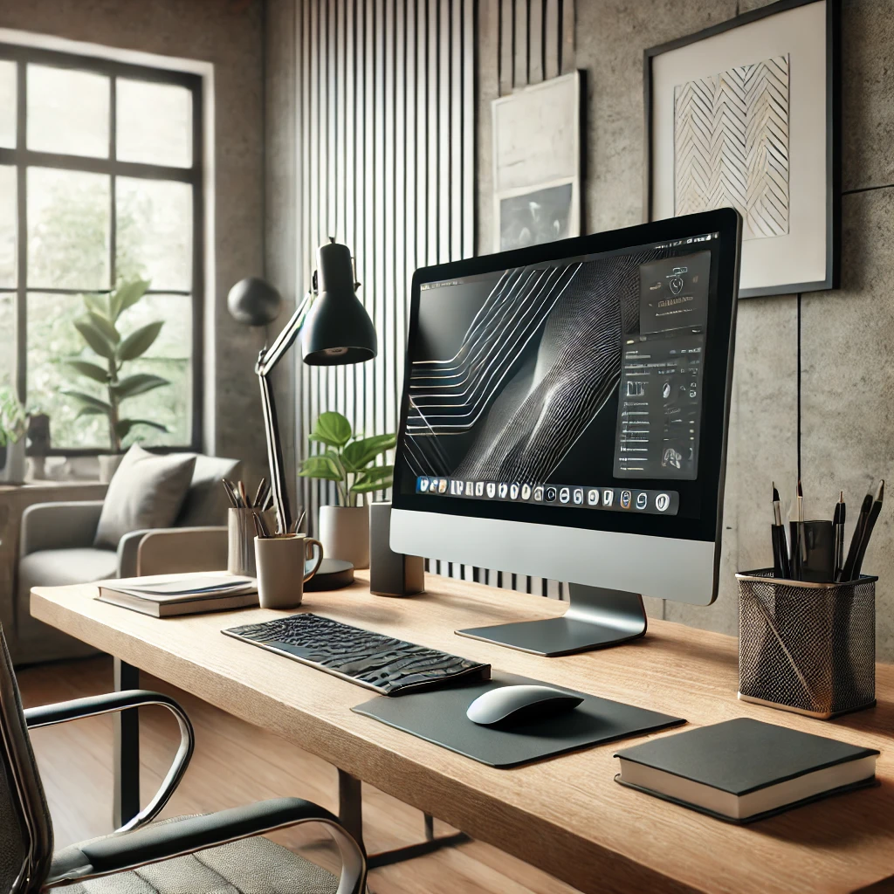
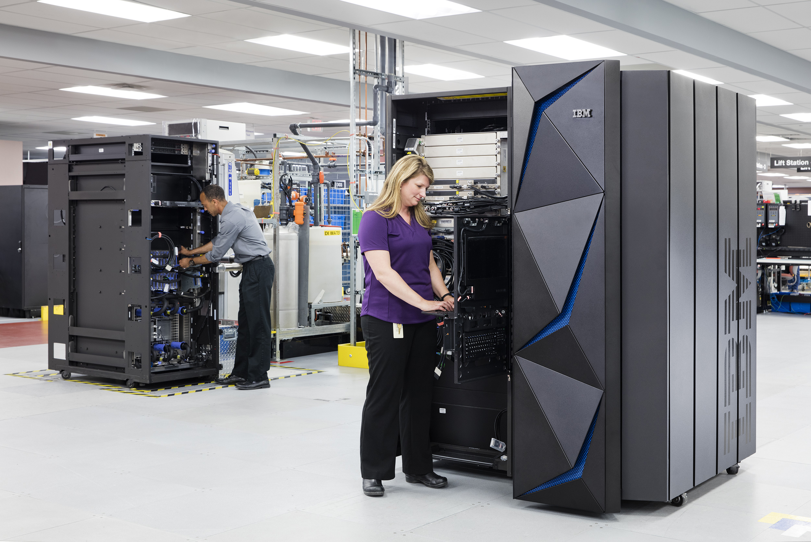

<html>

</html>

<head>
    <title>Sanjay website</title>

    <style>
        * {
            margin: 0;
        }

        body {
            background: rgb(247, 238, 227);
        }

        .head {

            text-align: center;
            padding: 20px;
            background-color: rgb(253, 157, 78);
            color: white;
        }

        .head h1 {
            font-family: 'Poppins', sans-serif;
        }

        .about-container {
            width: 700px;
            margin: 50px auto;
            background-color: #fff;
            padding: 20px;
            border: 1px solid #ddd;
            box-shadow: 0 0 10px rgba(0, 0, 0, 0.1);

        }

        .about h2 {
            margin-top: 0;
            text-align: center;
            padding-bottom: 5px;
            font-family: 'Segoe UI', Tahoma, Geneva, Verdana, sans-serif;
        }

        .about p {
            padding: 10px;
            text-align: center;
            font-family: 'Segoe UI', Tahoma, Geneva, Verdana, sans-serif;
        }

        .tab h1 {
            padding: 15px;
            font-family: 'Gill Sans', 'Gill Sans MT', Calibri, 'Trebuchet MS', sans-serif;
        }

        .tab h3 {
            padding: 10px;
            padding-bottom: 20px;
        }

        table {
            padding: 30px;
            background-color: rgb(229, 229, 229);
            margin-bottom: 40px;
            margin-left: 70px;
            margin-right: 70px;
            font-size: large;
            border-collapse: collapse;
        }

        table th,
        table td {
            border: 2px solid black;
            padding: 10px;
        }

        table {
            padding: 30px;
            background-color: #f2f2f2;
            border-radius: 10px;
            margin-left: 100px;
            margin-right: 100px;
            font-size: large;
            border-collapse: collapse;
            box-shadow: 0 0 10px rgba(0, 0, 0, 0.1);
            font-family: 'Open Sans', sans-serif;
        }

        table th,
        table td {
            border: 1px solid black;
            padding: 15px;
        }

        .contact-container {
            width: 500px;
            margin: 50px auto;
            background-color: #fff;
            padding: 20px;
            border: 1px solid #ddd;
            box-shadow: 0 0 10px rgba(0, 0, 0, 0.1);
        }

        .contact h2 {
            margin-top: 0;
            text-align: center;
            padding-bottom: 5px;
            font-family: 'Franklin Gothic Medium', 'Arial Narrow', Arial, sans-serif;
        }

        footer {
            text-align: center;
            padding: 30px;
        }

        .contact p {
            font-size: large;
            font-family: cursive;
            padding: 10px;
        }

        .contact ul li {
            padding: 10px;
        }
    </style>
</head>

<body>
    <div class="head">
        <h1>Hello, I'm Sanjay!</h1><br>
        <h3>__Front-End Developer__</h3>
    </div>

    <div class="about-container">
        <div class="about">
            <h2>About me</h2>
            <p>I am Sanjay, a first-year Computer Science Engineering (CSE) student at Kings Engineering College (CSE
                'B' class). I'm passionate about web development, specializing in front-end development, and currently
                expanding my skills to become a full-stack developer.</p>
        </div>
    </div>
    <hr>
    <div class="tab">
        <center>
            <h1>Classifications of Computer</h1>
            <h3>We Are Going to See About Classifications of Computer with Easy Understanding: A Journey Through
                Technology.</h3>
        </center>
    </div>

    <table>
        <tr>
            <th>Computer</th>
            <th>Description</th>
            <th>Image</th>
        </tr>
        <tr>
            <td>Personal Computers (PCs)</td>
            <td>Designed for individual use, personal computers can be desktops or laptops, typically used for tasks
                like word processing, internet browsing, and gaming.</td>
            <td></img></td>

        </tr>
        <tr>
            <td>Workstations</td>
            <td>High-performance computers designed for technical or scientific applications. They offer more power,
                memory, and storage than standard PCs and are often used in fields like engineering and graphic design.
            </td>
            <td></img></td>

        </tr>
        <tr>
            <td>Servers</td>
            <td>Computers that provide data, resources, or services to other computers over a network. They can manage
                multiple users and run specialized applications.</td>
            <td></img></td>

        </tr>
        <tr>
            <td>Mainframes</td>
            <td>Powerful computers used primarily by large organizations for bulk data processing, transaction
                processing, and large-scale computing tasks. Mainframes are known for their reliability and ability to
                handle vast amounts of data.</td>
            <td></img></td>

        </tr>
        <tr>
            <td>Supercomputers</td>
            <td>Extremely fast computers used for complex computations, such as climate modeling, scientific
                simulations, and large-scale data analysis. They consist of thousands of processors working in parallel.
            </td>
            <td></img></td>
        </tr>
    </table>
    <hr>

    <div class="contact-container">
        <div class="contact">
            <h2>Contact Details</h2>
            <p>Get in touch with me through:</p>
            <ul>
                <li>Email: ursanjay191721@gmail.com</li>
                <li>Phone: +91 637482*007</li>
                <li>
                    Social Media:
                    <ul>

                        <li>Instagram:<a href="https://www.instagram.com/lov3ly_sanjay/" target="_blank"><i
                                    class="fa fa-instagram" aria-hidden="true"></i>@lov3ly_sanjay</a></li>

                        <li>linkedin:<a href="https://www.linkedin.com/in/sanjay69" target="_blank"><i
                                    class="fa fa-linkedin"
                                    aria-hidden="true"></i>https://www.linkedin.com/in/sanjay69</a></li>
                    </ul>
                </li>
            </ul>
        </div>
    </div>


    <footer>
        <p>&copy; Sanjay | All Right Reserved.</p>
    </footer>

</body>

</html>